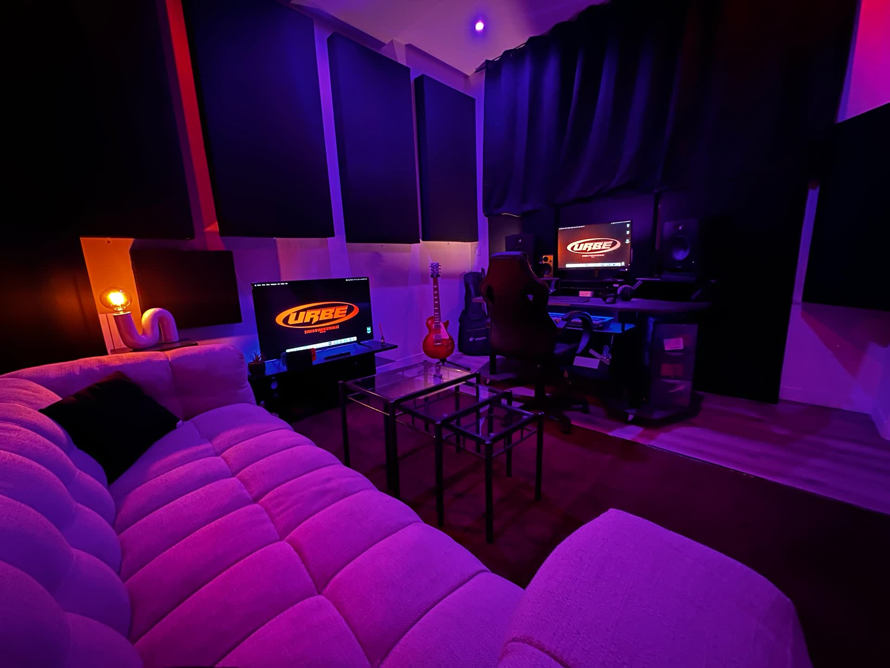

Studio d'enregistrement à Paris 10ᵉ
Au cœur du 10ᵉ arrondissement, Urbe Studio est un studio d'enregistrement à Paris ouvert 24h/24 et 7j/7, pensé pour le rap, la pop et le podcast.

Un vrai studio, en plein Paris
Notre studio d'enregistrement se trouve au 37 rue d'Hauteville, Paris 75010. Cabine traitée acoustiquement, régie modulable et salon intégré : un espace de 30m² conçu pour le confort, la confidentialité et la qualité sonore. Que vous veniez enregistrer une voix, un instrument ou un podcast, l'environnement est prêt à l'emploi.
Avec ou sans ingénieur du son
- Avec ingénieur — 30€/h. Prise de son, placement micro, direction artistique : tu joues, il cadre.
- Sans ingénieur — 20€/h. La cabine est à toi, en autonomie totale (ordinateur portable requis).
- Session de nuit — 35€/h. Après 21h, le studio est plus calme — et souvent plus inspirant.
Équipement
Apollo Twin X, FC Atlantis 387, Neumann TLM 103, monitoring Focal Shape 60, console et instruments de composition. De quoi enregistrer et produire dans des conditions professionnelles.
Au-delà de la session
Le studio prolonge ses services en ligne : retrouvez notre mixage et mastering audio en ligne et notre approche du mixage rap à Paris.